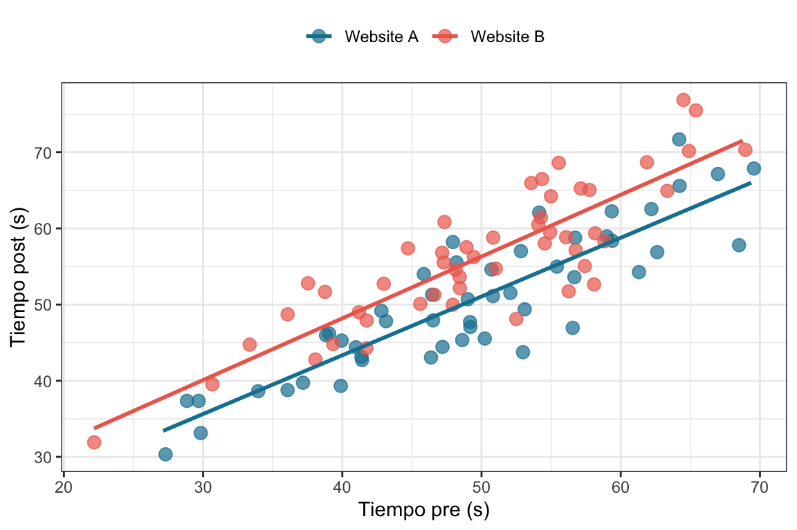
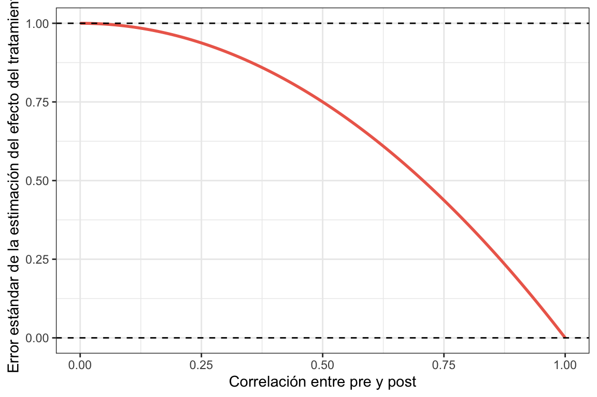
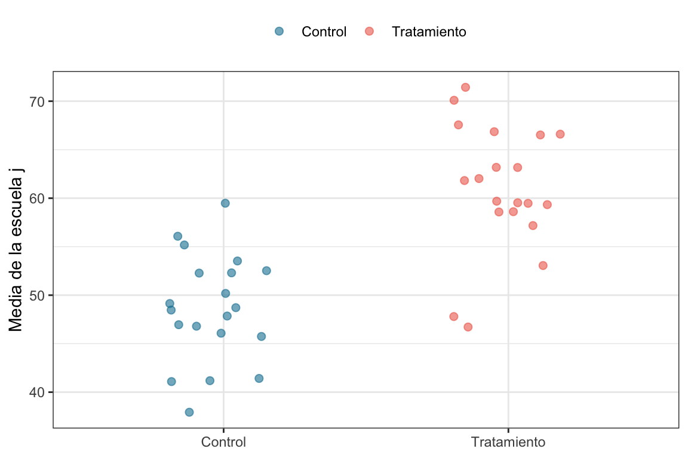
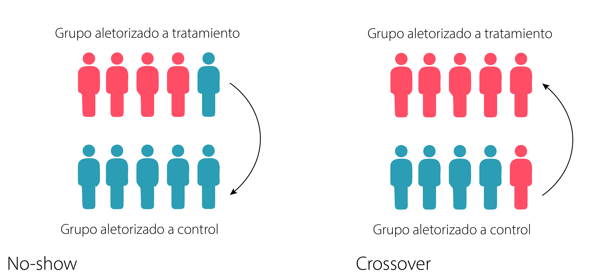

En los experimentos aleatorios1 los sujetos son asignados a los grupos (por ejemplo, tratamiento y control) aleatoriamente. Esto significa que en la asignación de los grupos aleatorios hay involucrado un proceso realmente aleatorio, como arrojar un moneda. Ojo con confundir el concepto de asignación aleatoria con el de muestra aleatoria: Que el muestreo sea aleatorio significa que los participantes son una muestra seleccionada al azar de una población más amplia, mientras que la asignación aleatoria significa que los participantes, independientemente de si fueron seleccionados de una población más amplia o no, son asignados al azar a diferentes condiciones experimentales.
Cuando hablamos de un evento aleatorio, hablamos de una entidad abstracta cuyo resultado no se puede predecir exactamente. Para poner este tipo de eventos en el mundo real solemos hechar mano de ejemplos clásicos que involucran una complejidad fìsica tal que resulta imposible predecirlos exactamente, como arrojar un dado o una moneda. El ejemplo de la moneda es la forma más usual de hablar de una variable aleatoria con dos posibles valores equiprobables (aunque parezca que no tanto (Bartoš et al. 2023)). Sin embargo, esta aleatoridad es muy costosa de reproducir. Es por eso que las computadores utilizan lo que se llama generadores de números pseudo aleatorios2. Estos generadores utilizan series de números generados de forma pseudo aleatoria pero que puede ser recuperada determinìsticamente a partir de una “semilla”. Es por eso que cuando simulamos datos en este libro lo primero que hacemos es ejecutar set.seed(42) (42 o el número que sea), para de esa forma poder obtener el mismo resultado cada vez que replicamos, o el lector quiere replicar, las simulaciones.
Dicho esto. A fines prácticos, es totalmente razonable utilizar un generador de números pseudo aleatorios para la asignación a grupos experimentales en los experimentos aleatorios.
Bartoš, František, Alexandra Sarafoglou, Henrik R Godmann, Amir Sahrani, David Klein Leunk, Pierre Y Gui, David Voss, et al. 2023. «Fair coins tend to land on the same side they started: Evidence from 350,757 flips». arXiv preprint arXiv:2310.04153.
Por ejemplo, en el caso más simple, esto significa que dada una muestra de personas, vamos a asignar a cada de una de ellas “tirando una moneda” al grupo control (\(D=0\)) o tratamiento (\(D=1\)) como se ve en la siguiente figura.
Los experimentos aleatorios son el gold-standard para estimar el efecto de un tratamiento. De hecho, al ser la asignación aleatoria, podemos asegurar que, como mencionamos en el capítulo Capítulo 3, existe independencia (\((Y^0, Y^1) \perp D\)). Esto nos asegura que la diferencia de medias de los grupos tratamiento y control son un estimador consistente del ATE. Dicho esto, veremos que hay formas más “eficientes” de estimar el ATE, es decir, con mayo potencia estadística.
Hay una razón extra para que en este libro empecemos hablando en detalle de los experimentos aleatorizados, y es que cuando entremos de lleno en el mundo de los cuasiexperimentos nos será de gran ayuda entender cuál es el problema y cuál es la solución que se propone. Esto nos va a permitir tener una idea más concreta de las ventajas y limitaciones de cada uno de los diseños cuasiexperimentales que vamos a estudiar más adelante.
Dicho esto volvamos al maravilloso mundo de los üåàexperimentos aleatorizados idealesüåà.
5.2 El experimento ideal
El experimento ideal es ese experimento tan bien planificado, tan bien implementado y tan bien acatado por sus participantes que en la realidad nunca ocurre. Sin embargo, hay una excepción y son, en general, los medical trials. De hecho hay algunas características que esperaríamos ver en un RCT3 y son las siguientes.
Asignación aleatoria a los grupos experimentles: Como vimos en el capítulo Capítulo 3, la mejor forma de asegurar que los grupos control y tratamiento son lo más iguales posibles es asignando aleatoriamente a los participantes. Esto, junto con una cantidad de participantes suficiente nos asegura que ambos grupos son iguales en todos los factores que pueden influenciar el resultado del experimento, incluyendo los factores de los que no sabemos.
Los individuos deben ser considerados en el grupo asignado: Los participantes asignados al grupo tratamiento deben ser considerados como tratamiento, independientemente de si se expusieron o no al mismo. Esto es conocido como el principio intention to treat y puede sonar un poco raro. Sin embargo, lo podemos pensar como un cambio del tratamiento que queremos evaluar. Por ejemplo, hay un experimento en el que se quiere evaluar el efecto de la estatinas en el colesterol LDL. Hay un grupo al que le dan estatinas y otro grupo al que le dan un placebo. Un $18% $ de los que fueron originalmente asignados al grupo estatinas dejó de tomarlas y un $38% $ de los que fueron asignados al grupo placebo empezó a tomar estatinas durante el trial. Esto significa que nuestro experimento no estimaría correctamente el efecto de tomar las estatinas, pero por otro lado, sí estimaría bien el efecto de ser recetado con estatinas. Y si lo pensamos un poco: ¿No es algo más razonable estimar el efecto de lo segundo?5
5 Una mejor explicación de este enfoque y su contraparte (no recomendada), el análisis por protocolo pueden visitar este paper[esto] https://onlinelibrary.wiley.com/doi/10.1111/nep.13709
Blinded: Para que las estimaciones de un experimento no se contaminen, resulta necesario que los participantes (o unidad experimental) no conozcan a que grupo experimental pertenecen. Esto es importante porque podría haber algún tipo de contaminación del efecto como por ejemplo que los sujetos que sepan que reciben la intervención se esfuercen para rendir mejor en el outcome o lo contrario al saberse “abandonados” al grupo control tiendan a rendir peor.
Medir a todos los individuos: Todos los individuos que comenzaron el experimento deben ser medidos para evaluar el efecto del tratamiento. Esto no siempre pasa y es algo de lo que vamos a hablar más adelante en este capítulo.
Que lindo es el diseño experimental. Todos somos felices, todo funciona. ¿El libro debería terminar acá?
Pues no mi ciela. Ojalá llevar adelante experimentos fuera tan fácil.
En un experimento ideal, los sujetos son asignados aletoriamente a los grupos experimentales y se quedan ahí. El efecto spillover o derrame sucede cuando los sujetos del grupo control reciben en forma indirecta parte o todo el tratamiento que esta diseñado para el grupo de intervención. ¿Cómo es esto posible? Es muy posible, sobre todo en intervenciones conductuales. Pongamos ejemplos para que se entienda. Supongamos que queremos ver el efecto de una intervención educativa como hábitos saludables para prevenir cierta enfermedad, algunos sujetos son asignados a la intervención y reciben una charla educativa y otros nada. Un par de amigos (i y j) han sido aleatorizados a un grupo y al otro respectivamente. Al terminar la intervención el sujeto intervenido (i) le cuenta la charla al sujeto del grupo control (j) y este “recibe el tratamiento”. En este ejemplo un sujeto asignado a un grupo control recibe el tratamiento destinado al grupo intervención. Es decir, el grupo tratamiento ha derramado hacia el grupo control.
5.3.3 Reversión de la cadena causal (o reverse causation)
La reversión causal es uno de los sesgos que pueden plagar nuestra interpretación de la cadena causa-efecto, sobre todo en los estudios observacionales.
No cumplimiento del tratamiento (non-compliance) Supongamos que en el experimento se asigna aleatoriamente a algunos sujetos a recibir un tratamiento, por ejemplo una nueva terapia para la caida de cabello, pero los sujetos con mas caida de cabello en las primeras dosis del grupo tratamiento sienten que el tratamiento es inutil y dejan de tomar las pastillas . Este evento introduce un sesgo de causalidad inversa si analizamos a los sujetos por si tomaron el tratamiento o no (por protocolo en lugar de intention-to-treat) ya que el outcome (la caida del cabello) genera la exposicion (la cantidad de medicación que las personas en el grupo de tratamiento reciben.
Efectos anticipados o comportamiento reactivo A veces, los participantes modifican su comportamiento en respuesta a saber su asignación. Ejemplo: alguien asignado al grupo control empieza a buscar alternativas por su cuenta (porque no recibió tratamiento), y eso afecta su resultado. O alguien en el grupo tratado ya anticipa que tendrá mejoríay cambia su comportamiento desde antes del tratamiento real. El resultado cambia en respuesta a la expectativa del tratamiento, y no necesariamente al tratamiento en sí.
Mediciones mal temporizadas En algunos experimentos, puede que la variable de outcome sea medida antes de que el tratamiento surta efecto, o incluso antes de aplicarlo bien. Si los resultados se usan para definir o cambiar el tratamiento asignado (por error o por diseño), ya no hay garantía de temporalidad: el resultado podría estar influyendo en el tratamiento.
Advertencia
Si prestaron atención a las secciones anteriores sospecharan que muchos de estos sesgos de causalidad inversa puedan evitarse aplicando analisis ITT y asegurandonos un blinded adecuado, es así
5.4 Experimentos between groups
Hablemos un poco de la nomenclatura
En este capítulo definimos los experimentos aleatorizados como aquellos en los que se asigna al azar a los participantes a una condición de tratamiento o de control. Este enfoque corresponde, en realidad a un sólo tipo de diseño aletorizado, los diseños conocidos como between-groups.
Antes de analizar los distintos tipos de diseños dentro de esta categoría, presentaremos algunas definiciones y notaciones clave.
Cuando querramos representar esquematicamente un diseño, vamos a recurrir a la notación clásica. Según esta, se representarán gráficamente tanto los experimentos aleatorizados como los cuasi-experimentos usando las letras \(X\) y \(O\). Una \(X\) indica la administración de un tratamiento, y una \(O\) representa una observación. Una \(O\) puede referirse a una observación de una o varias variables en un momento determinado. Una observación puede ser cualquier tipo de medición, ya sea un test escrito, un registro fisiológico, un informe verbal, o cualquier otra evaluación empírica. En estos diagramas, el tiempo (como la lectura) fluye de izquierda a derecha. Cuando se realizan varias observaciones, se utilizan subíndices en las \(O\) para indicar el momento de cada medición.
Utilizando esta notación, el experimento aleatorizado entre grupos más simple se representa así:
\[\begin{array}{lcl}
\text{R:} & X & O \\
\text{R:} & & O \\
\end{array}\]
Vamos a tratar de entender que significa esta notación, en principio hay dos líneas, esto indica que hay dos grupos, cada línea empieza con una \(R\), esto indica que los sujetos fueron asignados aleatoriamente (o random) a la participacion de ese grupo, vemos en la primera línea que ese grupo a recibido un tratamiento \(X\) y el otro no y que ambos grupos han sido evaluados posterior a ello en una instancia \(O\). Este diseño se conoce como post-test only o sólo post-test ya que como puede verse en este diseño la única medida que se toma es despues de la intervención.
Una vez que hemos entendido este diseño sencillo podemos introducir otro un poco más complejo como este
Recapitulemos, los diseños post-test only son la forma más simple de experimentos aletorizados entre grupos en donde un grupo es aleatoriamente asignado a una intervención, el otro a su condición de control, y posteriormente a ello se evalua el outcome. Resumiendo e la notación:
\[\begin{array}{lcl}
\text{R:} & X & O \\
\text{R:} & & O \\
\end{array}\]
Este diseño puede escribirse (y analizarse) utilizando un modelo lineal que tiene la siguiente forma:
En nuestro ejemplo vamnos a asignar aleatoriamente a los usuarios a dos versiones distintas de un sitio web (la version anterior Website A o control, y la version nueva Website B o intervención) y mediremos el tiempo de permanencia en segundos. Es decir, queremos ver si el cambio de diseño de la página web tiene un efecto positivo en el tiempo que los usuarios pasan en el sitio. En este caso, el tiempo de permanencia es nuestro outcome y la variable de tratamiento es la versión del sitio web.
Vamos a simular los datos para \(100\) usuarios (50 en cada grupo) y luego vamos a estimar el ATE usando un modelo lineal. Como los datos son simulados, conocemos el efecto real de la intervención (el ATE) que es de \(5\) segundos. De hecho, sabemos que el tiempo promedio de permanencia en la versión A es de \(50\) segundos y en la versión B es de \(55\) segundos 7.
Donde \(t_i\) es el tiempo de permanencia en segundos, y \(T_i\) es una variable indicadora que toma el valor \(1\) si el participante pertenece al grupo tratamiento (Website B) y el valor \(0\) si pertenece al grupo control (Website B). En este caso, \(\beta_T\) representa la diferencia promedio entre los dos grupos, es decir, el ATE.
Ajustemos un modelo lineal y veamos cómo da la cosa.
Como podemos ver, la estimación del efecto del tratamiento es de 6.36 segundos. Esto significa que la nueva versión del sitio web tiene un efecto positivo en el tiempo de permanencia de los usuarios en comparación con la versión anterior.
8 No confundamos esa diferencia de 1.36 con un sesgo como el que vimos en el capítulo [#sec-pot-outcomes]. En ese caso recordemos que había esperanzas involucradas.
Donde todo representa lo mismo que en la ecuación Ecuación 5.1, pero ahora \(X_i\) es la medida pre del sujeto \(i\). En este caso, \(\beta_T\) representa de nuevo el efecto del tratamiento y \(\beta_X\) representa el efecto de la medida pre.
Veamos como se adaptaría el ejemplo de la sección anterior si agregamos una medición
5.4.2.1 Midamos algo antes en el A/B test
A los datos que simulamos anteriormente les vamos a agergar una nueva medida, el tiempo que están en el sitio web antes de la intervención. Vamos a suponer, igual que en el ejemplo anterior, que el tiempo promedio de permanencia en la versión A es de \(50\) segundos y en la versión B es de \(55\) segundos. Vamos a simular de nuevo los datos para \(100\) usuarios (\(50\) en cada grupo).
Empecemos mirando los datos como los vimos antes
Ver el código
# Pretest-posttest ####set.seed(123)n <-50time_post <-rnorm(2*n, 50, 10)time_pre <-time_post +rnorm(n, 0, 5)control_pre <- time_pre[1:n] tratamiento_pre <- time_pre[(n+1):(2*n)]control_post <- time_post[1:n] tratamiento_post <- time_post[(n+1):(2*n)] +5data_pre <-tibble(tiempo_pre =c(control_pre, tratamiento_pre),tiempo_post =c(control_post, tratamiento_post),condicion =c(rep("Website A", n), rep("Website B", n)))data_pre %>%ggplot(aes(x = condicion, y = tiempo_post, color = condicion)) +geom_jitter(width = .2) +geom_smooth(method ="lm", se = F) +scale_color_manual(values =c("#1380A1", "#ED6A5A")) +labs(x =NULL,y ="Tiempo post (s)", color =NULL) +theme_bw() +theme(legend.position ="top")#> `geom_smooth()` using formula = 'y ~ x'
Se ve bastante parecido a lo que vimos antes ¿No? Tratemos de medir el efecto del tratamiento como lo hicimos en el ejemplo anterior, usando la ecuación Ecuación 5.1. Si ajustamos ese modelo, que no tiene en cuenta a la medida pre, vamos a obtener las mismas estimaciones que en el ejemplo previo. Tiene sentido ¿No? Claro que sí, porque usamos la misma semilla para generar los datos.
Ver el código
modelo_pre_basico <-lm(data = data_pre, tiempo_post ~ condicion)modelsummary(list("A/B Sin incluir el tiempo pre"= modelo_pre_basico),coef_rename =c("condicionWebsite B"="Website B"),statistic =NULL, gof_omit ='DF|Deviance|R2|AIC|BIC|Log.Lik|F')
A/B Sin incluir el tiempo pre
(Intercept)
50.344
Website B
6.120
Num.Obs.
100
RMSE
9.07
¿Esto está mal? Por supuesto que no. Pero miremos los datos, pero esta vez usando el tiempo pre como predictor.
Ver el código
data_pre %>%ggplot(aes(x = tiempo_pre, y = tiempo_post, color = condicion)) +geom_jitter(width = .2) +geom_smooth(method ="lm", se = F) +scale_color_manual(values =c("#1380A1", "#ED6A5A")) +labs(x ="Tiempo pre (s)",y ="Tiempo post (s)", color =NULL) +theme_bw() +theme(legend.position ="top")#> `geom_smooth()` using formula = 'y ~ x'

Lo que podemos ver es que, debido a cómo simulamos los datos, el tiempo pre y el tiempo post están correlacionados, es decir, parte de la variabilidad que tenemos en el tiempo post la podemos explicar por diferencias en el tiempo pre. Entonces vamos a incorporar el tiempo pre como predictor en nuestro modelo. En este caso (usando la ecuación Ecuación 5.2). Comparemos las estimaciones de este modelo con las del de la ecuación Ecuación 5.1.
Ver el código
modelo_pre_basico <-lm(data = data_pre, tiempo_post ~ condicion)modelo_pre <-lm(data = data_pre, tiempo_post ~ condicion + tiempo_pre)modelsummary(list("A/B Sin incluir el tiempo pre"= modelo_pre_basico,"A/B Pretest-postest only"= modelo_pre),coef_rename =c("condicionWebsite B"="Website B","tiempo_pre"="Tiempo-pre"),statistic =NULL, gof_omit ='DF|Deviance|R2|AIC|BIC|Log.Lik|F')
Repitamos la simulación de \(1000\) experimentos, pero ahora usando el modelo pretest-postest. Vamos a ver cómo se distribuyen las estimaciones de \(\beta_T\) incluyendo y no incluyendo el tiempo pre.
Acá viene lo importante. Podemos ver que cuando incluimos la medición del tiempo pre en el modelo, la distribución de las estimaciones de \(\beta_T\) es más angosta. Esto significa que la variabilidad de las estimaciones es menor y que el error estándar de la estimación del efecto del tratamiento es menor. En otras palabras, al incluir la medición pre en el modelo, estamos reduciendo la varianza no explicada por el modelo y, por lo tanto, mejorando la precisión de nuestras estimaciones y con ella la potencia estadística de nuestro test.
Esta relación para n infinito podemos verla gráficamente en la siguiente figura. En la figura se muestra la relación entre la correlación entre las medidas pre y post y el error estándar de la estimación del efecto del tratamiento.
Ver el código
errores <-tibble(rho =seq(0, 1, 0.01),sigma_Ancova = (1-rho^2))errores %>%ggplot(aes(x = rho,y = sigma_Ancova)) +geom_line(linewidth =1) +geom_hline(yintercept =c(0,1), linetype ="dashed") +labs(x ="Correlación entre pre y post",y ="Error estándar de la estimación del efecto del tratamiento") +theme_bw()

Podemos ver que con correlación \(1\) entre las medidas pre y post la potencia sería infinita, pero bueno, recordemos que esto es para n infinito.
5.5 Diseños clúster
Los diseños clúster son una forma de diseño experimental donde los sujetos son asignados a grupos (clústeres) y luego se asignan tratamientos a esos grupos. Este enfoque es útil cuando no es práctico o posible asignar tratamientos a individuos de manera independiente.
Las ventajas de los diseños cluster son varias:
A veces puede resultar más práctico o conveniente asignar aleatoriamente a grupos que a individuos. Por ejemplo, en el sistema escolar nos pueden permitir asignar cursos o escuelas a distintos tratamientos pero no a estudiantes
La aleatorización a nivel clúster puede ser útiles para minimizar los efectos de difusión, imitación de tratamientos u otros problemas de adherencia. Por ejemplo, para un estudiante es más difícil ser crossover si el tratamiento diferente lo tienen en otro aula o escuela en lugar de su compañero de banco.
Pueden ser necesarios para evitar los spillovers. En el estudio de la campaña de SMSs para mejorar la tasa de vacunación contra el HPV hubieran hecho la aleatorización a nivel barrio o cioudad, no hubieran tenido el spillover debido a que un vecino te comenta del SMS que recibió.
Pueden ser necesarios para evitar las externalidades. Por ejemplo, si se está haciendo un experimento para evaluar el efecto de un tratamiento dentro de un determinado grupo cerrado (una ciudad), el aumento de empleabilidad para el grupo tratamiento puede generar que haya menos empleos disponibles para el grupo control y que baje su tasa de empleo, no como consecuencia de ser menos “empleables”. Aleatorizando por ciudad se puede reducir este efecto.
Algunos programas se aplican sí o sí a grupos. Por ejemplo, una campaña mediática, una terapia de grupo o un cambio de política a nivel escuela.
Todo parece ideal, ¿No? Pero nada de esto viene sin un costo. En general el costo es la potencia estadística. Es decir, para tener la misma potencia estadística que aleatorizando a nivel de individuo, vamos a necesitar más (y a veces muchos más) sujetos experimentales divididos en grupos. Más de eso en la sección que sigue.
5.5.1 Análisis de datos jerárquicos
Para analizar este tipo de datos utilizamos modelos estadísticos que tienen en cuenta la estructura jerárquica de los datos. En este libro los vamos a llamar de forma general modelos jerárquicos9. A continuación tenemos la estructura de un modelo lineal jerárquico con un sólo nivel de agrupamiento10.
Donde tanto \(r_j\) como \(\epsilon_{ij}\) tiene esperanza cero y varianza \(\sigma^2_{inter-clúster}\) y \(\sigma^2_{intra-clúster}\) respectivamente. En la ecuación anterior \(T_j\) es una variable indicadora que toma el valor \(1\) si la escuela, y no el participante como antes, pertenece al grupo tratamiento y el valor \(0\) si no. De esta forma, si la escuela pertenece al grupo tratamineto su media será \(\mu_{j|D_j=1} = \beta_0 + \beta_T + r_j\) mientras que si pertenece al grupo control será \(\mu_{j|D_j=0} = \beta_0 + r_j\), y la esperanza de la diferencia entre ambas (dado que la esperanza de \(E(r_j)=0\)) será justamente la magnitud del efecto del tratamiento \(\beta_T\).
5.5.2 La potencia y la correlación intraclase (ICC)
donde \(\sigma^2_{inter-clúster}\) es la varianza entre clústers, es decir, cuánto se varían las medias de los clústers, y \(\sigma^2_{intra-clúster}\) es la varianza dentro de los clústers, es decir, cuánto varías las mediciones de cada individuo dentro de cada clúster.
Como mencionamos anteriormente, la aleatorización a nivel de clúster tiene su costo. Si los outcomes dentro de cada clúster están altamente correlacionados y la magnitud de los resultados varía considerablemente entre clústers, entonces es probable que los participantes dentro de un mismo grupo tengan resultados similares, y el ICC será alto. En estos casos, los datos provenientes de un individuo aportan casi tanta información como si se incluyera a todos los miembros. Por lo tanto, el tamaño muestral efectivo se aproxima más al número de clústers que al tamaño total de la muestra de individuoos.
Pasando en limpio. Si los clústers son más similares entre sí, el modelo estadístico será más potente, con un tamaño de muestra efectivo cercano a la cantidad de individuos mientras que si los clústers difieren mucho entre sí la potencia estadística cae, aproximándonos a un tamaño de muestra efectivo igual a la cantidad de clústers.
Es por esto último que en la práctica siempre conviene agergar más clústers que individuos11. Pero claro, eso es lo que suele ser más costoso.
# Data jerárquicaset.seed(42)n_escuelas <-40# Supongamos que tengo n_escuelas escuelas, cada una de ellas tiene una media de la calificacion de nota de matemáticamu_j <-rnorm(n_escuelas, 50, 5)# Las primera 3 son asignadas al grupo tratamiento y las otrasa tres al grupo controld <-c(rep("Tratamiento", n_escuelas/2), rep("Control", n_escuelas/2))# El efecto del tratamiento es 10, entonces a la media de cada escuela que pertenece al grupo tratamiento# le sumamos 10beta_T <-10# Armo un tibble con las escuelasescuelas <-tibble(tratamiento = d, media = mu_j) |>mutate(media =if_else(tratamiento =="Tratamiento", media + beta_T, media)) # Graficamos los promedios de las escuelasescuelas |>ggplot(aes(x = tratamiento, y = media,color = tratamiento)) +geom_jitter(size =2, alpha = .6,width = .2) +scale_color_manual(values =c("#1380A1", "#ED6A5A")) +labs(color =NULL, x =NULL, y ="Media de la escuela j") +theme_bw() +theme(legend.position ="top")

Como era esperable, las medias de las escuelas en el grupo tratamiento están por encima de las medias en el grupo control. Sin embargo, hay escuelas para las que esto no es así. Es por eso que es muy importante modelar a la escuela (el clúster) como una posible fuente de variabilidad.
# Data jerárquica# Ahora vamos a muestrear 20 estudiantes en cada escuela, con media mu_j y un sigma de 10alumnos <-tibble(tratamiento =rep(d, each =20), order =rep(1:n_escuelas, each =20),escuela =rep(paste("Escuela", 1:n_escuelas), each =20),media =rep(mu_j, each =20)) |>mutate(media =if_else(tratamiento =="Tratamiento", media + beta_T, media)) |>rowwise() |>mutate(Yij =rnorm(1, media, 10)) |>select(-media)# Graficamos los promedios de las escuelasalumnos |>ggplot(aes(x =fct_reorder(escuela, desc(order)), y = Yij,color = tratamiento)) +geom_jitter(size =1, alpha = .6,width = .2) +scale_color_manual(values =c("#1380A1", "#ED6A5A")) +labs(color =NULL, x =NULL, y ="Yij") +coord_flip() +theme(legend.position ="top")
Acá vemos que a la variabilidad de las escuelas se suma la variabilidad de los sujetos.
Ahora vamos a tratar de recuperar el tamaño del efecto ajustando un modelo lineal de efectos mixtos12.
12 Sin entrar en demasiado detalle, un modelo lineal de efectos mixtos tiene en cuenta la estructura jerarquica del efecto. En este caso en particular vamos a permitirle al modelo que el punto medio de cada colegio sea considerado un factor aleatorio.
# Data jerárquicaset.seed(12)n_escuelas <-100betalmer <-c()beta_T <-10d <-c(rep("Tratamiento", n_escuelas/2), rep("Control", n_escuelas/2))for (i in1:1000) { mu_j <-rnorm(n_escuelas, 50, 5) alumnos <-tibble(tratamiento =rep(d, each =20), escuela =rep(paste("Escuela", 1:n_escuelas), each =20),media =rep(mu_j, each =20)) |>mutate(media =if_else(tratamiento =="Tratamiento", media + beta_T, media)) |>rowwise() |>mutate(Yij =rnorm(1, media, 10)) |>select(-media) mlmer <-lmer(Yij ~ tratamiento + (1|escuela), data = alumnos) betalmer <-c(betalmer, fixef(mlmer)[2])}betas <-tibble(betalmer = betalmer)mean_beta <- betas |>summarise(m_beta =mean(betalmer))betas |>ggplot(aes(x = betalmer)) +geom_histogram(fill ="#1380A1", alpha = .6,bins =30) +geom_vline(xintercept = mean_beta$m_beta, color ="#1380A1", linewidth =1) +geom_label(data = mean_beta,aes(label =paste("Efecto promedio =", round(m_beta,2))),x =10, y =50) +labs(x ="Estimación del efecto del tratamiento",y =NULL) +theme_bw()
Vemos que si hacemos un histograma de todas las estimaciones del parámetro en base a las \(1000\) simulaciones de los datos, el promedio es 10.02, un valor bastante cercano al valor real de \(10\)13. Ahora sí nos podemos quedar tranquilos.
13 Recordemos que en la práctica nunca vamos a conocer el valor real del parámetro y que esa es un ventaja que sólo tenemos en estos casos en los que simulamos “muestras” a partir de valores conocidos de los parámetros.
5.6 Falta de cumplimiento del tratamiento asignado
Participantes no-shows: esta condición sucede cuando los participantes asignados aleatoriamente a la condición de tratamiento podrían negarse a recibir el tratamiento, no presentarse a la sesión de tratamiento o preferir el tratamiento de comparación y buscarlo en lugar del tratamiento experimental al que habían sido asignados. En otras palabras son sujetos que siguiendo la notación de potential outcomes,s erían: \(D_0 T_1\)14
Participantes crossovers: en estos casos la condición es opuesta, algunos participantes asignados aleatoriamente a la condición de comparación podrían enterarse del tratamiento y, de alguna manera, conseguir entrar a la condición de tratamiento o recibir un tratamiento similar fuera del ámbito del estudio. O bien, los investigadores (motivados por otras causas externas al diseño) podrían violar el protocolo de asignación aleatoria y exponer a algunos participantes a la condición de tratamiento que originalmente estaban asignados a la condición de comparación. O sea \(D_1 T_0\)

14 Recordemos que en la notacion de potential outcomes definiamos \(D\) a recibir el tratamiento y \(T\) al grupo que estaba asignados.
Como habiamos visto anteriormente los spillovers comprometen la condicion SUTVA sobre la que se asienta la estimación del ATE como una diferencia entre los outcomes de ambos grupos. En este caso la no adherencia compromete la validez interna, ya que puede sesgar las estimaciones de los efectos del tratamiento. Para mantener la comparabilidad de los participantes en las condiciones de tratamiento, lo mejor es tratar de minimizar el incumplimiento de los protocolos de tratamiento.
Se pueden implementar varias estrategias para impedir que esto ocurra, por ejemplo:
Hacer ambos grupos atractivos. La tentación inicial a la hora de diseñar un experimento es que el grupo control no reciba absolutamente nada. Esto hace que los individuos en el grupo control rápidamente se sientan a disgusto ya que esperan algo de beneficio en el participar y busquen moverse al grupo tratamiento.
Tratar de hacer ambos grupos “fáciles de seguir” para los participantes. En ocasiones el grupo tratamiento tiene que seguir un montón de tareas, mientras que el grupo control sólo unas pocas. Este escenario hace que muchos sujetos se desanimen en el grupo tratamiento y se conviertan en no-shows.
Asegurarse antes de la asignacion que los individuos serán capaces de cumplir con cualquiera de las intervenciones. Es importante hacer el compromiso explícito con los sujetos que van a completar la intervención, no obstante los criterios de exclusión deben diseñarse concienzudamente para eliminar a aquellos sujetos que no van a poder cumplir con ella. Por ejemplo, es poco probable que un sujeto con un trabajo de \(8\) horas diarias pueda cumplir con una intervencion de \(6\) horas de caminata diaria.
Dijimos que vamos a tratar de evitar la falta de cumplimiento, no obstante trabajamos con seres humanos y es muy probable que podamos minimizar este hecho pero vaya a seguir ocurriendo. En estas condiciones el ATE no puede ser estimado como SDO porque no todos los sujetos asignados a cada grupo cumplió a rajatabla. Pero no desesperen que hay alternativas.
5.6.1 Estrategias para estimar el ATE en no cumplimiento
5.6.1.1 Análisis tratamiento como recibido
Pensemos en los escenarios planteados previamente, cuando se dan no-shows y crossovers decimos que los sujetos “se cambian de grupo” al recibir o no recibir el tratamiento. Si eso ocurre ¿no sería lógico analizar a los sujetos de acuerdo al tratamiento recibido en el grupo que corresponde?
A ver formalicemos un poco el escenario. En los análisis por tratamiento recibido, se conforman dos nuevos grupos: a) un grupo tratamiento que contiene a los \(D_1 T_1\) (asignados al tratamiento y que recibieron el tratamiento) y a los \(D_1 T_0\) (los asignados a la condicion control que recibieron el tratamiento, los crossover) y b) un grupo control conformado por los \(D_0 T_0\) y por los \(D_0 T_1\) (los asignados al grupo tratamiento que decidieron no hacerla o se pasaron al control, es decir los no-shows)
Este análisis es otro enfoque que, aunque puede parecer atractivo a simple vista, no se recomienda. Este análisis compara únicamente a quienes completaron los protocolos de tratamiento tal como les fueron asignados originalmente o sea a los \(D_1 T_1\) (en el grupo tratamiento) y \(D_0 T_0\) (en el grupo control),los sujetos \(D_1 T_0\) y los \(D_0 T_1\) son directamente excluídos de todo análisis.
Cuando hacemos este enfoque, la estimación del efecto cobra otra realidad y la llamamos estimación de la intención de tratamiento (o estimate ITT) y tiene la siguiente forma:
donde \(\bar{Y}_T\) es el resultado medio para el grupo de tratamiento según fue originalmente asignado, y \(\bar{Y}_C\) es el resultado medio para el grupo de comparación según fue originalmente asignado.
La estimación ITT tiene la ventaja de comparar participantes que son aleatoriamente equivalentes. Pero puede ser difícil de interpretar, dado que es el efecto promedio de haber ofrecido el tratamiento en comparación con no haberlo ofrecido, más que el efecto promedio del tratamiento si todos hubieran recibido el protocolo de tratamiento asignado.